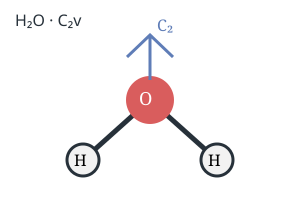
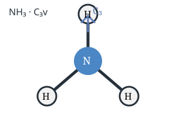
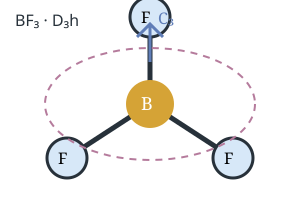
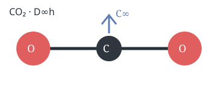
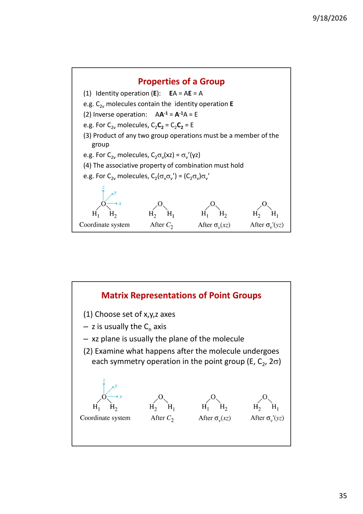
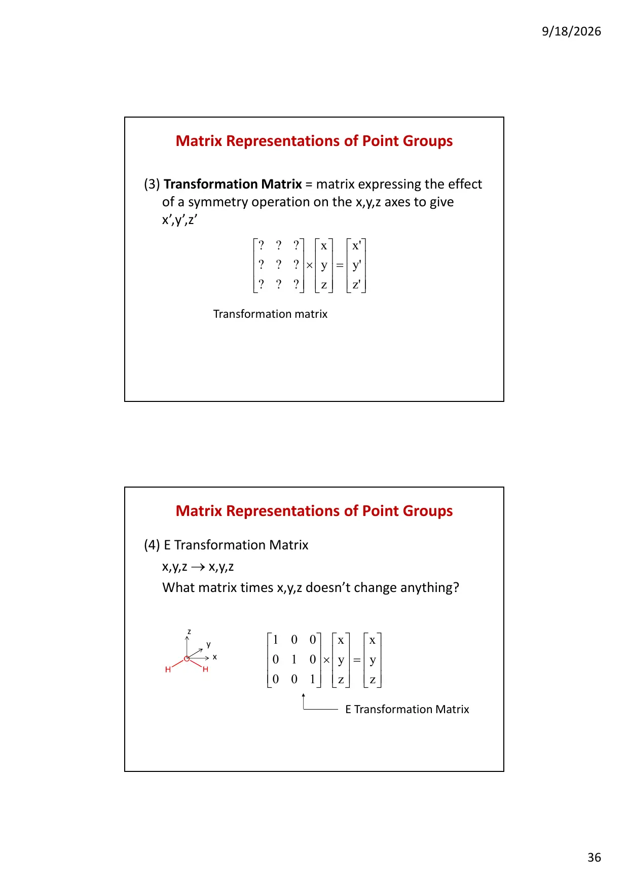
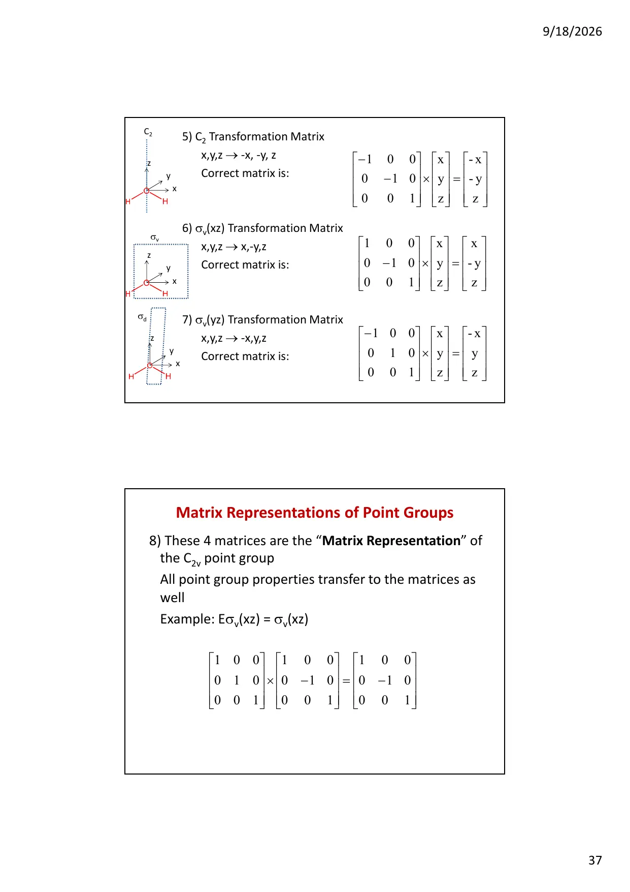

SPECIAL TOPIC · POINT GROUPS · OPERATION MATRICES
点群、对称性与操作矩阵
把“这个分子看起来很对称”转化为可计算的语言：先识别几何操作，再把操作写成坐标变换矩阵，用矩阵乘法验证群结构，最后由迹得到特征标，并连接到轨道、SALC、振动和光谱选择定则。
1. 这套专题究竟要解决什么问题
点群学习经常在“看图认名称”和“背特征标表”之间断裂：前者似乎只靠空间想象，后者又突然变成抽象代数。操作矩阵正好提供了中间桥梁。它把分子上的一次旋转、反射或反演翻译为坐标列向量的线性变换；矩阵的乘法表示连续执行操作；矩阵的迹（trace）压缩成特征标（character）；特征标再用于把可约表示拆成不可约表示。于是，几何直觉、线性代数与光谱应用不再是三套孤立的知识。
本专题采用一个固定顺序：先说明操作到底移动了什么，再固定坐标轴；接着写出坐标变换，组装矩阵；然后检查矩阵的乘法、逆和封闭性；最后才读表、约化和应用。考试中若点群判错，后面的表、SALC 和振动全会一起错，所以“矩阵计算”不能替代几何判定，而是用来验证几何判定是否自洽。

H₂O · C₂v一根 C₂、两个 σᵥ
NH₃ · C₃v一根 C₃、三个 σᵥ
BF₃ · D₃h三根横向 C₂、σₕ
CO₂ · D∞h线性、反演中心2. 对称元素、对称操作与“变换对象”
对称元素是几何参照物：旋转轴、镜面、反演中心；对称操作则是实际执行的动作。矩阵表示的对象不是“分子图片”本身，而是相对于固定原点和固定坐标轴的向量。可以把某个原子的位置写为 r=(x,y,z)ᵀ，也可以把 p 轨道、键方向或位移向量写成同样形式。对位置向量，矩阵告诉我们原子被送到哪里；对轨道或位移向量，矩阵还会告诉我们方向是否翻转。
| 操作 | 几何动作 | 坐标变化的核心 | 常见特殊情形 |
|---|---|---|---|
| E（identity） | 什么也不做 | (x,y,z)→(x,y,z) | 所有分子都有 E |
| Cn | 绕轴旋转 360°/n | 垂直轴的坐标发生二维旋转 | C₂、C₃、C₄ |
| σ | 关于平面反射 | 平面法向分量变号 | σₕ、σᵥ、σd |
| i（inversion） | 穿过中心到等距离反向点 | (x,y,z)→(−x,−y,−z) | S₂=i |
| Sn | 先旋转，再关于垂直平面反射 | 矩阵为反射矩阵与旋转矩阵的乘积 | S₁=σ、S₂=i |
要特别区分“原子位置被移走”和“向量方向变号”。在求点群本身时，只要同种原子互换后整体重合即可；在求轨道或键向量的表示时，若一个向量留在原位但方向反过来，它对特征标贡献 −1。若向量被送到另一个位置，则在该表示的迹中通常贡献 0。这正是操作矩阵与普通点群几何图之间的关键差别。

3. 坐标约定：矩阵前最重要的“准备工作”
同一个分子的矩阵并不唯一，因为矩阵依赖坐标轴的选择。化学中最常见的约定是把最高阶主轴 Cn 取为 z 轴；如果分子是平面的，通常把分子平面取为 xz 或 yz 平面。这样，水分子的 C₂ 可取 z 轴，分子平面取 xz；NH₃ 的 C₃ 也取 z 轴；BF₃ 的 C₃ 垂直于分子平面，同样取 z 轴。
换坐标轴不会改变物理结论，却可能交换 B₁ 与 B₂、改变 σᵥ 的标注，或者使某个 p 轨道的标签看起来不同。因此在答案开头写一句“取 z 为主轴，分子位于 xz 平面”，不是多余的形式，而是在声明你所使用的表示约定。只要后续全程一致，标签的变化不会造成化学矛盾。
位置向量
用于追踪原子、配体或几何点。
极矢量
位移、偶极矩、平移和 p 轨道按普通坐标变换。
轴矢量
转动 Rx、Ry、Rz 在反射和反演下还有额外符号。
函数基
轨道或二次函数可能相互混合，矩阵未必是对角矩阵。

4. 五类基本操作的矩阵模板
4.1 恒等 E
恒等操作什么都不改变，因此矩阵是单位矩阵。单位矩阵的三个对角元为 1，非对角元为 0；它是所有操作的乘法单位元，满足 ED(R)=D(R)E=D(R)。
⎢0 1 0⎥
⎣0 0 1⎦
4.2 绕 z 轴的 Cn
令 θ=2π/n。绕 z 轴逆时针旋转时，z 不变，x 与 y 在 xy 平面内旋转。采用列向量约定，坐标变换矩阵为：
当 n=2 时 θ=180°，cosθ=−1、sinθ=0，所以 D(C₂)=diag(−1,−1,1)。当 n=3 时，cos120°=−1/2，sin120°=√3/2，矩阵中会出现非对角项；这就是 C₃v 的二维 E 表示比 C₂v 更复杂的原因之一。旋转矩阵的迹为 1+2cosθ，它等于该三维坐标表示在 Cn 下的特征标。
4.3 镜面 σ
关于 xz 平面反射时，x、z 保持，y 变号；关于 yz 平面反射时，y、z 保持，x 变号；关于 xy 平面反射时，x、y 保持，z 变号。
| 操作 | 坐标变化 | 矩阵 | 迹 χ |
|---|---|---|---|
| E | (x,y,z)→(x,y,z) | diag(1,1,1) | 3 |
| σ(xz) | (x,y,z)→(x,−y,z) | diag(1,−1,1) | 1 |
| σ(yz) | (x,y,z)→(−x,y,z) | diag(−1,1,1) | 1 |
| σ(xy) | (x,y,z)→(x,y,−z) | diag(1,1,−1) | 1 |
4.4 反演 i 与非真旋转 Sn
反演矩阵是 −I₃。它的行列式为 −1，说明反演会反转空间取向。若 Sn 的旋转轴为 z，且反射面为 xy，则可写成 D(Sn)=D(σh)D(Cn)；因为这两个矩阵都作用于同一 z 轴并且可交换，乘法顺序在这一特例中不会造成差异。一般处理复合操作时仍要遵守题目指定的“先做哪一步”。
5. C₂v：从几何操作到四个矩阵
以 H₂O 为例，取 z 为 C₂ 主轴，分子位于 xz 平面。C₂v 的四个操作是 E、C₂(z)、σᵥ(xz)、σ′ᵥ(yz)。这里的 σᵥ(xz) 是分子平面，σ′ᵥ(yz) 是垂直分子平面且包含 C₂ 轴。写出四个矩阵后，任何关于 x、y、z 的线性问题都可以直接计算。
| C₂v 操作 | x′ | y′ | z′ | D(R) |
|---|---|---|---|---|
| E | x | y | z | diag(1,1,1) |
| C₂(z) | −x | −y | z | diag(−1,−1,1) |
| σᵥ(xz) | x | −y | z | diag(1,−1,1) |
| σ′ᵥ(yz) | −x | y | z | diag(−1,1,1) |
这些矩阵完全复现 C₂v 的群乘法。例如先做 σᵥ(xz)，再做 σ′ᵥ(yz)，有：
几何上，两次关于相交平面的反射等价于绕两平面交线旋转两倍夹角；这里两平面互相垂直，旋转 360°？不，反射面 xz 与 yz 的夹角为 90°，两次反射给出绕它们交线 z 轴旋转 180°，即 C₂。这个例子也提醒我们：矩阵乘法的左、右顺序要与“先后操作”的列向量约定保持一致。

6. 矩阵乘法就是操作复合
设列向量 r 先经历操作 A，再经历操作 B，则最终向量为 r′=D(B)D(A)r。因此“右边的矩阵先作用”。这和函数复合的书写习惯一致，也是最容易在考试中写反的地方。若两个操作可交换，交换顺序不会影响结果；若不可交换，则必须明确操作顺序。
单位元
任何操作与 E 相乘仍是自己。
逆操作
旋转的逆是反向旋转，镜面和反演的逆是自身。
封闭性
两个群操作复合后仍等价于群内某个操作。
结合律
矩阵乘法满足结合律，分组方式不影响结果。
在 C₂v 中，所有矩阵都是对角矩阵，因此四个操作彼此可交换，C₂v 是阿贝尔群。更高阶的 C₃v 中，旋转与某些镜面通常不交换：先旋转再反射得到的镜面方向，与先反射再旋转得到的镜面方向不同。这并不破坏群结构，只说明操作复合不是普遍交换的。
| 复合 | 几何解释 | 结果 |
|---|---|---|
| C₂·C₂ | 连续两次 180° 绕 z 轴旋转 | E |
| σ(xz)·σ(xz) | 同一镜面反射两次 | E |
| σ(yz)·σ(xz) | 关于两个垂直平面连续反射 | C₂(z) |
| C₂·σ(xz) | 矩阵相乘 | σ(yz) |
7. 特征标：为什么只看矩阵的迹就够用了
一个方阵主对角线元素之和称为迹，记为 Tr。对称操作 R 在某组基函数上的表示矩阵记作 D(R)，其特征标定义为 χ(R)=Tr[D(R)]。特征标不保留矩阵全部信息，却保留了表示分解所需要的关键不变量：相似变换不会改变迹，换一套等价基函数也不会改变同一个表示的特征标。
| 基函数/向量 | E | C₂(z) | σ(xz) | σ(yz) | 对应表示 |
|---|---|---|---|---|---|
| x | 1 | −1 | 1 | −1 | B₁ |
| y | 1 | −1 | −1 | 1 | B₂ |
| z | 1 | 1 | 1 | 1 | A₁ |
| (x,y,z) | 3 | −1 | 1 | 1 | Γxyz=A₁+B₁+B₂ |
例如 C₂v 的三维坐标表示 Γxyz，在 E 下三个分量都不变，字符为 3；在 C₂ 下 x、y 变号而 z 不变，字符为 −1；在两个镜面下分别有两个分量不变、一个分量变号，字符都为 1。因此 Γ=(3,−1,1,1)。把 x、y、z 分开看，就得到三个一维不可约表示的直和 A₁+B₁+B₂。
字符 0 的直觉
字符 0 不等于“没有变化”。在二维表示中，两个基函数可能相互混合，矩阵对角线一正一负，或两个旋转分量的贡献相互抵消。例如 C₃v 的 E 表示对应 (x,y)，C₃ 旋转后的矩阵迹为 2cos120°=−1，而 σᵥ 下一个方向保持、另一个方向反向，迹为 0。
8. 可约表示与不可约表示：从矩阵中拆出“最小对称模块”
如果一组基函数在操作下会彼此混合，整体表示通常是可约表示 Γ。它可以通过换基或块对角化拆成若干不可约表示的直和。不可约表示可以理解为不能再拆分的最小对称模块；C₂v 的 A₁、A₂、B₁、B₂ 都是一维不可约表示，C₃v 的 E 是二维不可约表示。
课件中从 C₂v 的三维坐标矩阵出发，把每个矩阵看成三个 1×1 块，于是 x、y、z 可以独立处理。x 的字符行是 (1,−1,1,−1)，属于 B₁；y 的字符行是 (1,−1,−1,1)，属于 B₂；z 的字符行是 (1,1,1,1)，属于全对称 A₁。剩下的 A₂ 不是坐标轴，但它对应 Rz 和 xy 等函数。
| C₂v | E | C₂ | σ(xz) | σ(yz) | 常见基函数 |
|---|---|---|---|---|---|
| A₁ | 1 | 1 | 1 | 1 | z；x²、y²、z² |
| A₂ | 1 | 1 | −1 | −1 | Rz；xy |
| B₁ | 1 | −1 | 1 | −1 | x、Ry；xz |
| B₂ | 1 | −1 | −1 | 1 | y、Rx；yz |
表格中的 A、B、E、T 不是元素符号，而是表示的维数与旋转性质标签。E 表示二维简并，T 表示三维简并；g/u 表示相对于反演中心的偶/奇，′/″表示相对于 σh 的对称/反对称。标签的具体下标约定依赖主轴和坐标选择，因此应先看表头，不要把不同点群的 B₁ 当成同一个函数。
9. 约化公式：每一个因子到底在做什么
设 Γred 是可约表示，Γ(i) 是目标不可约表示。目标表示在 Γred 中出现的次数为：
这个式子不是需要盲算的黑箱。它本质上是带权内积：把可约表示的字符行投影到每个不可约表示的字符行上。若投影结果是 1，说明该模块出现一次；结果为 2，说明出现两次；理论上应为非负整数。出现负数或非整数时，优先检查点群、操作类数、字符抄写和类权重，而不是怀疑公式。
BF₃ 的 σ 键方向：Γσ=A₁′+E′
BF₃ 属 D₃h，三根 B–F σ 键作为基函数。按课件逐类检查：E 保留三根，字符 3；2C₃ 把三根互相循环，字符 0；3C₂ 留下一根、移动两根，字符 1；σₕ 保留三根，字符 3；2S₃ 移动三根，字符 0；3σᵥ 各保留一根，字符 1。因此 Γσ=(3,0,1,3,0,1)，用 D₃h 表约化为 A₁′+E′。
A₁′ 可与 B 的 s、pz或 dz²型对称函数相容，E′可与 (px,py) 对相容。实际能量上 B 的 2s 与 2p 合适，而 3d 太高，因此“对称性允许 d 轨道”不等于“BF₃ 使用 d 轨道杂化”。这是操作矩阵与现代成键观点相结合的典型例子。
| D₃h 操作类 | E | 2C₃ | 3C₂ | σₕ | 2S₃ | 3σᵥ |
|---|---|---|---|---|---|---|
| Γσ | 3 | 0 | 1 | 3 | 0 | 1 |
| A₁′ | 1 | 1 | 1 | 1 | 1 | 1 |
| E′ | 2 | −1 | 0 | 2 | −1 | 0 |
| A₁′+E′ | 3 | 0 | 1 | 3 | 0 | 1 |
10. 操作矩阵怎样作用于轨道与键
轨道是空间函数，不是无方向的小球。s 轨道在任意操作下都保持不变，属于全对称表示；pz若 z 为主轴，通常像 z 一样变换；px和 py则分别像 x、y。对于 p 轨道，若操作把正叶与负叶互换，函数整体变号；对于 d 轨道，则要同时考虑两个坐标的乘积，例如 dxy像 xy，dx²−y²像 x²−y²。
| 函数 | C₂(z) | σ(xz) | σ(yz) | C₂v 标签 |
|---|---|---|---|---|
| s、pz、dz² | + | + | + | A₁ |
| Rz、dxy | + | − | − | A₂ |
| px、dxz | − | + | − | B₁ |
| py、dyz | − | − | + | B₂ |
成键时需要把中心原子轨道和配体群轨道放在同一个点群下比较。只有标签相同的函数才有对称性允许的重叠积分。例如 C₂v 中 A₁ 的配体组合可以和中心 s 或 pz混合；B₁ 的组合可以和 px混合；A₂ 与 B₂ 若没有相同标签的中心轨道，就不会因为“空间上看起来靠近”而形成一阶成键相互作用。
对称性筛选是必要条件，不是充分条件。两个轨道即使同为 A₁，也还要有相近能量和非零空间重叠；若能量差很大，混合很弱。反过来，标签不同的轨道在理想高对称近似下积分严格为零，即使能量再接近也不能直接混合。
11. 振动表示：矩阵如何从 3N 个位移中扣出答案
N 个原子共有 3N 个笛卡尔位移基函数。对某个点群操作，先看哪些原子仍在原位；被移走的原子不贡献迹。对留在原位的原子，再写局部 x、y、z 位移在该操作下的 3×3 矩阵并取迹。这样得到 Γ3N 的字符行。随后减去整体平移和整体转动，剩余部分就是振动表示。
以 H₂O 为例，点群 C₂v、N=3，最终应有 3N−6=3 个正常振动。若得到多于或少于 3 个振动，说明在 Γ3N、平移/转动扣除或约化过程中有错误。操作矩阵在这里提供了一个很实用的检查：留在原位的 O 原子在 C₂ 下的局部位移迹是 −1；两个 H 在 C₂ 下互换，因此不贡献；这些信息共同构成 Γ3N 的字符。
| 物理量 | 对应函数 | 光谱条件 | 直观含义 |
|---|---|---|---|
| 红外偶极矩变化 | x、y、z | 振动表示含相同标签 | 振动使偶极矩一阶改变 |
| Raman 极化率变化 | x²、y²、z²、xy、xz、yz | 振动表示含相同标签 | 振动使极化率一阶改变 |
| 平移 | x、y、z | 从 Γ3N 中减去 | 分子整体移动 |
| 转动 | Rx、Ry、Rz | 从 Γ3N 中减去 | 分子整体转动 |
12. 反演、行列式与手性/极性的矩阵解释
正旋转矩阵的行列式为 +1，保持右手坐标系的取向；镜面、反演和 Sn 等非真操作的行列式为 −1，反转空间取向。手性分子不能通过任何空间取向反转操作与自身重合，所以不能含 σ、i 或任何 Sn。这不是额外背诵的经验规则，而是“是否存在 det(D)=−1 的自同构”的几何表达。
极性则关注偶极矩这个极矢量是否有不变方向。若存在横向 C₂，沿主轴的偶极会被翻转；若存在 σh，垂直主轴的偶极会被翻转；若有多根高阶轴，任意固定方向通常都被旋转掉。因此 D 类、T/O/I 类和含 i 的点群不允许永久偶极矩，而 C₁、Cs、Cn、Cnv只是在对称性上允许极性。
| 性质 | 矩阵/操作条件 | 允许的常见点群 | 典型例子 |
|---|---|---|---|
| 可能极性 | 存在不被所有 D(R) 改变的极矢量 | C₁、Cs、Cn、Cnv | H₂O、NH₃ |
| 必非极性 | 有横向 C₂、σₕ、i 或多重高阶轴 | D、T、O、I 及含 i 的群 | BF₃、苯、SF₆ |
| 可能手性 | 不存在 det=−1 的自同构操作 | C₁、Cn、Dn | [Co(en)₃]³⁺ |
| 必非手性 | 存在 σ、i 或任意 Sn | 含非真操作的点群 | 交错乙烷 D₃d |
13. 从操作矩阵到选择定则的完整链条
选择定则的核心不是“某个峰经验上常出现”，而是积分在对称操作下必须保持不变。以跃迁偶极矩为例，积分可写作 ⟨ψf|μ|ψi⟩。若初态、偶极矩分量和终态的直积不包含全对称表示 A₁，则积分在群平均后抵消，跃迁被对称性禁止。振动 IR 活性则把 μ 换成振动坐标导致的偶极矩变化；Raman 活性把一阶偶极换成极化率张量。
这解释了为什么特征标表右侧常同时列出 x、y、z 和二次函数。它们不是装饰，而是直接告诉你哪些表示能与偶极矩或极化率耦合。C₂v 中 A₁ 有 z 和 x²/y²/z²，所以 A₁ 振动既可能 IR 活性也可能 Raman 活性；有反演中心时，x/y/z 为 u，二次函数为 g，于是同一表示不可能同时属于两类。
cis/trans-ML₂(CO)₂ 的矩阵思维
cis 平面正方形配合物属 C₂v，两个 C–O 伸缩坐标在操作下组合成 A₁+B₁；没有反演中心，模式可能同时 IR/Raman 活性。trans 异构体属 D₂h，中心有 i；两个伸缩坐标分成一个 g 模式和一个 u 模式，g 只在 Raman 中出现，u 只在 IR 中出现。几何异构体因此可以通过联合光谱区分。
14. 一套真正可执行的矩阵题解题流程
- 先判点群，不要先写矩阵。
找最高阶 Cn，检查横向 C₂，再检查 σh、σv、σd、i 和 Sn。点群错了，矩阵的操作集合就错了。
- 声明坐标。
通常 z 为主轴；说明分子平面是哪一个坐标平面，并明确 σᵥ 的标记。
- 写坐标变化，不要凭图猜矩阵。
逐个写 x′、y′、z′。例如 C₂(z) 是 (−x,−y,z)，σ(xz) 是 (x,−y,z)。
- 把变化翻译成矩阵。
第 j 列表示原来的第 j 个基向量被送到哪里；列向量约定下不要把行列弄反。
- 取迹并整理成字符行。
矩阵主对角线之和就是 χ；二维混合表示不要逐个看箭头，要直接求矩阵迹。
- 用群性质做检查。
平方、逆操作、已知复合是否回到 E 或群内操作；约化系数是否为非负整数；维数平方和是否等于群阶。
- 最后才接应用。
把表示与中心轨道、平移/转动、偶极矩或极化率函数匹配，给出成键或 IR/Raman 结论。
考试书写模板
“取 z 为最高阶主轴，分子位于 xz 平面。该点群的操作为……；它们对 (x,y,z) 的变换分别为……，故表示矩阵为……，特征标为……。将 Γ 按约化公式分解得……，与表中……函数相同，因此……振动/轨道在对称性上允许。”
15. 练习题：从几何到矩阵再到应用
取 z 为 C₂ 轴、分子位于 xz 平面。写出 C₂v 四个操作的 3×3 坐标矩阵，并求 Γxyz 的字符。
为什么 NH₃ 的 C₃ 矩阵含有非对角元？从二维 (x,y) 旋转矩阵求 C₃v 的 E 表示在 C₃ 下的特征标。
将三根 σ 键作为基，逐类写出 D₃h 的 Γσ=(3,0,1,3,0,1)，并约化为 A₁′+E′。
在 C₂v 中判断 px、py、pz 与 A₁、B₁、B₂ 配体群轨道的允许混合。
比较 cis/trans-ML₂(CO)₂：哪个有反演中心？哪些 CO 伸缩只在 IR 或 Raman 中活性？
某同学把 BF₃ 写成 C₃h。指出漏掉的操作，并用“横向 C₂ 优先”规则改正。
附录 A. 常用点群特征标表全表
前面 15 节用到的所有特征标表集中放在这里，按「低对称 → 高对称」排列，共 20 个化学中最常见的点群。每一张表的排列与课件第 42 页的 C₂v 表一致：第一行是点群符号、操作类（类前数字为该类包含的操作个数，即类权重 gR）与群阶 h；最右侧两栏分别是线性函数（x、y、z 与 Rx、Ry、Rz）和二次函数（x²、y²、z²、xy、xz、yz）。空的格子表示该不可约表示不含这一栏中的基函数——它并不是漏印，而是有意义的结论：例如 C₃v 的 A₂ 行右侧为空，所以 A₂ 既不含 x/y/z（红外非活性）也不含任何二次函数（Raman 非活性）。
读表前先固定坐标轴
同一张表在不同教材里可能被写成不同样子，通常是坐标轴选取不同造成的。本附录统一采用无机化学中最常见的约定：最高阶主轴取为 z 轴（线性分子则取分子轴为 z），含 σh 的群取 σh 为 xy 平面。正因为如此，D₂h 的 C₂ 轴才写成 C₂(z)、C₂(y)、C₂(x)，C₂v 的两个镜面才写成 σv(xz) 与 σ′v(yz)。若把主轴换成 y 轴，B₁ 与 B₂ 会互换，σv 的撇号也会改变，但这不产生任何化学上的矛盾。写答案时先声明坐标约定，就能避免这类混乱。
A.1 速查：按类群跳转
A.2 群阶速查
| 点群 | h | 点群 | h | 点群 | h | 点群 | h |
|---|---|---|---|---|---|---|---|
| C₁ | 1 | Cs | 2 | Ci | 2 | C₂ | 2 |
| C₃ | 3 | C₂v | 4 | C₃v | 6 | C₄v | 8 |
| C₂h | 4 | D₂ | 4 | D₃ | 6 | D₂h | 8 |
| D₃h | 12 | D₃d | 12 | D₄h | 16 | D₅h | 20 |
| Td | 24 | Oh | 48 | C∞v | ∞ | D∞h | ∞ |
附录 B. 五个最常考的点群
考试与作业中九成以上的查表都发生在这五个群里，因此把它们单独放大排一遍。表的形态与课件第 42 页的 C₂v 表完全一致：点群符号、类权重、群阶，右侧线性函数与二次函数两栏。C₂v、C₃v、D₃h、Td、Oh 的完整形态见附录 A。
B.1 C₂v 特征标表（h = 4）
| C₂v | E | C₂ | σv(xz) | σ′v(yz) | h=4 | 线性函数 | 二次函数 |
|---|---|---|---|---|---|---|---|
| A₁ | 1 | 1 | 1 | 1 | z | x², y², z² | |
| A₂ | 1 | 1 | −1 | −1 | Rz | xy | |
| B₁ | 1 | −1 | 1 | −1 | x, Ry | xz | |
| B₂ | 1 | −1 | −1 | 1 | y, Rx | yz |
B.2 C₃v 特征标表（h = 6）
| C₃v | E | 2C₃ | 3σv | h=6 | 线性函数 | 二次函数 |
|---|---|---|---|---|---|---|
| A₁ | 1 | 1 | 1 | z | x² + y², z² | |
| A₂ | 1 | 1 | −1 | Rz | ||
| E | 2 | −1 | 0 | (x, y), (Rx, Ry) | (x² − y², xy), (xz, yz) |
B.3 D₃h 特征标表（h = 12）
| D₃h | E | 2C₃ | 3C₂ | σh | 2S₃ | 3σv | h=12 | 线性函数 | 二次函数 |
|---|---|---|---|---|---|---|---|---|---|
| A₁′ | 1 | 1 | 1 | 1 | 1 | 1 | x² + y², z² | ||
| A₂′ | 1 | 1 | −1 | 1 | 1 | −1 | Rz | ||
| E′ | 2 | −1 | 0 | 2 | −1 | 0 | (x, y) | (x² − y², xy) | |
| A₁″ | 1 | 1 | 1 | −1 | −1 | −1 | |||
| A₂″ | 1 | 1 | −1 | −1 | −1 | 1 | z | ||
| E″ | 2 | −1 | 0 | −2 | 1 | 0 | (Rx, Ry) | (xz, yz) |
B.4 Td 特征标表（h = 24）
| Td | E | 8C₃ | 3C₂ | 6S₄ | 6σd | h=24 | 线性函数 | 二次函数 |
|---|---|---|---|---|---|---|---|---|
| A₁ | 1 | 1 | 1 | 1 | 1 | x² + y² + z² | ||
| A₂ | 1 | 1 | 1 | −1 | −1 | |||
| E | 2 | −1 | 2 | 0 | 0 | (2z² − x² − y², x² − y²) | ||
| T₁ | 3 | 0 | −1 | 1 | −1 | (Rx, Ry, Rz) | ||
| T₂ | 3 | 0 | −1 | −1 | 1 | (x, y, z) | (xy, xz, yz) |
B.5 Oh 特征标表（h = 48）
| Oh | E | 8C₃ | 6C₂ | 6C₄ | 3C₂ | i | 6S₄ | 8S₆ | 3σh | 6σd | h=48 | 线性函数 | 二次函数 |
|---|---|---|---|---|---|---|---|---|---|---|---|---|---|
| A1g | 1 | 1 | 1 | 1 | 1 | 1 | 1 | 1 | 1 | 1 | x² + y² + z² | ||
| A2g | 1 | 1 | −1 | −1 | 1 | 1 | −1 | 1 | 1 | −1 | |||
| Eg | 2 | −1 | 0 | 0 | 2 | 2 | 0 | −1 | 2 | 0 | (2z² − x² − y², x² − y²) | ||
| T1g | 3 | 0 | −1 | 1 | −1 | 3 | 1 | 0 | −1 | −1 | (Rx, Ry, Rz) | ||
| T2g | 3 | 0 | 1 | −1 | −1 | 3 | −1 | 0 | −1 | 1 | (xy, xz, yz) | ||
| A1u | 1 | 1 | 1 | 1 | 1 | −1 | −1 | −1 | −1 | −1 | |||
| A2u | 1 | 1 | −1 | −1 | 1 | −1 | 1 | −1 | −1 | 1 | |||
| Eu | 2 | −1 | 0 | 0 | 2 | −2 | 0 | 1 | −2 | 0 | |||
| T1u | 3 | 0 | −1 | 1 | −1 | −3 | −1 | 0 | 1 | 1 | (x, y, z) | ||
| T2u | 3 | 0 | 1 | −1 | −1 | −3 | 1 | 0 | 1 | −1 |
附录 C. 低对称点群（C 系与 S2n 的简化情形）
这一组点群操作类很少，但它们是判定树走到最后时最常兜底的结果。注意 C₁、Cs、Ci、C₂ 这四个群的所有不可约表示都是一维的，因此不会出现字符 0。
C₁（h = 1）
| C₁ | E | h=1 | 线性函数 | 二次函数 |
|---|---|---|---|---|
| A | 1 | x, y, z, Rx, Ry, Rz | x², y², z², xy, xz, yz |
只有恒等操作的群，任何分子都可以只按 C₁ 处理；它是「无对称性」的极限，也是唯一没有任何对称性限制的点群。
Cs（h = 2）
| Cs | E | σh | h=2 | 线性函数 | 二次函数 |
|---|---|---|---|---|---|
| A′ | 1 | 1 | x, y, Rz | x², y², z², xy | |
| A″ | 1 | −1 | z, Rx, Ry | xz, yz |
只有一个镜面的群，表中写作 A′/A″（对镜面对称/反对称），无下标 1、2。取镜面为 xy 平面时，z 属 A″。
Ci（h = 2）
| Ci | E | i | h=2 | 线性函数 | 二次函数 |
|---|---|---|---|---|---|
| Ag | 1 | 1 | Rx, Ry, Rz | x², y², z², xy, xz, yz | |
| Au | 1 | −1 | x, y, z |
只有一个反演中心的群（如交错构象的 1,2-二氯-1,2-二溴乙烷）。注意 x、y、z 都是 u，二次函数都是 g，因此这类分子对每个振动模式都严格服从互斥规则。
C₂（h = 2）
| C₂ | E | C₂ | h=2 | 线性函数 | 二次函数 |
|---|---|---|---|---|---|
| A | 1 | 1 | z, Rz | x², y², z², xy | |
| B | 1 | −1 | x, y, Rx, Ry | xz, yz |
只有一根 C₂ 轴（如 H₂O₂ 的重叠构象）。A 对旋转对称，B 反对称。C₂ 属 Cn 系，故 A 为全对称表示，这类分子允许存在沿 z 的永久偶极矩。
C₃（h = 3）
| C₃ | E | C₃ | C₃² | h=3 | 线性函数 | 二次函数 |
|---|---|---|---|---|---|---|
| E | 1 | ε | ε* | (x, y), (Rx, Ry) | (x² − y², xy), (xz, yz) | |
| 1 | ε* | ε |
这里正式出现了复数特征标：ε = exp(2πi/3) = −1/2 + i√3/2，ε* 是它的共轭。二维表示 E 的字符行必须两行合起来读：第一行是 χ(E) = 1、χ(C₃) = ε、χ(C₃²) = ε*，第二行是 χ(E) = 1、χ(C₃) = ε*、χ(C₃²) = ε。两行之和看起来是 (2, −1, −1)，但作为一维复表示它们各自才是不可约的；化学上把这一对复表示合起来等价于一个二维实表示。分子若只有一根 C₃ 轴而没有镜面（如 P(C₆H₅)₃ 螺旋构象），就属 C₃，这类分子可能具有手性。
附录 D. Cnv 与 Cnh 系
Cnv 是「一根 Cn 轴 + n 个含轴镜面」的群，涵盖了 H₂O、NH₃、CH₂Cl₂、BrF₅ 等大量弯曲或锥形分子。C₂h 是 Cnh 中最常见的一个（反式二氯乙烯、反式丁二烯、N₂F₂ 等）。
C₂v（h = 4）
| C₂v | E | C₂ | σv(xz) | σ′v(yz) | h=4 | 线性函数 | 二次函数 |
|---|---|---|---|---|---|---|---|
| A₁ | 1 | 1 | 1 | 1 | z | x², y², z² | |
| A₂ | 1 | 1 | −1 | −1 | Rz | xy | |
| B₁ | 1 | −1 | 1 | −1 | x, Ry | xz | |
| B₂ | 1 | −1 | −1 | 1 | y, Rx | yz |
水分子、SO₂、CH₂Cl₂、cis-ML₂(CO)₂ 都在此群。A₁ 行同时含 z 与二次函数，所以 A₁ 振动既红外活性又 Raman 活性；四个表示都至少含一个基函数，因此 C₂v 中的任何振动模式都至少对一种光谱有活性。
C₃v（h = 6）
| C₃v | E | 2C₃ | 3σv | h=6 | 线性函数 | 二次函数 |
|---|---|---|---|---|---|---|
| A₁ | 1 | 1 | 1 | z | x² + y², z² | |
| A₂ | 1 | 1 | −1 | Rz | ||
| E | 2 | −1 | 0 | (x, y), (Rx, Ry) | (x² − y², xy), (xz, yz) |
NH₃、CHCl₃、POCl₃、NF₃ 在此群。与 C₂v 的关键差别是 E 行的二次函数栏：它含的 (x² − y², xy) 与 (xz, yz) 不是 d 轨道本身，而是 d 轨道的对称性标签（dx²−y²、dxy、dxz、dyz），这说明 d 轨道在 C₃v 下会成对简并。
C₄v（h = 8）
| C₄v | E | 2C₄ | C₂ | 2σv | 2σd | h=8 | 线性函数 | 二次函数 |
|---|---|---|---|---|---|---|---|---|
| A₁ | 1 | 1 | 1 | 1 | 1 | z | x² + y², z² | |
| A₂ | 1 | 1 | 1 | −1 | −1 | Rz | ||
| B₁ | 1 | −1 | 1 | 1 | −1 | x² − y² | ||
| B₂ | 1 | −1 | 1 | −1 | 1 | xy | ||
| E | 2 | 0 | −2 | 0 | 0 | (x, y), (Rx, Ry) | (xz, yz) |
BrF₅（四方锥）、XeOF₄、IF₅ 在此群。注意 B₁ 与 B₂ 的线性函数栏为空——它们不含 x、y、z，因此 B₁、B₂ 振动是红外非活性的，只能通过 Raman 观察到（x² − y² 与 xy 都是二次函数）。这是 Cnv 系中 A₂ 之外第二类常见的「空线性栏」。
C₂h（h = 4）
| C₂h | E | C₂ | i | σh | h=4 | 线性函数 | 二次函数 |
|---|---|---|---|---|---|---|---|
| Ag | 1 | 1 | 1 | 1 | Rz | x², y², z², xy | |
| Bg | 1 | −1 | 1 | −1 | Rx, Ry | xz, yz | |
| Au | 1 | 1 | −1 | −1 | z | ||
| Bu | 1 | −1 | −1 | 1 | x, y |
反式二氯乙烯、反式 N₂F₂、反式丁二烯在此群。它是含 i 的群，故同样服从互斥规则：g 模式只在 Raman 中出现，u 模式只在红外中出现。σh 在表中常被取为 xy 平面，此时 C₂ 沿 z 轴、i 位于原点。
附录 E. D 系点群
D 系的特点是有 n 根垂直于主轴的 C₂ 轴，因此不存在任何沿主轴的永久偶极矩。按是否含 σh 分为 Dnh（有）与 Dnd（无 σh，但有 σd）；D₂、D₃ 是最简单的两个，只有旋转操作。
D₂（h = 4）
| D₂ | E | C₂(z) | C₂(y) | C₂(x) | h=4 | 线性函数 | 二次函数 |
|---|---|---|---|---|---|---|---|
| A | 1 | 1 | 1 | 1 | x², y², z² | ||
| B₁ | 1 | 1 | −1 | −1 | z, Rz | xy | |
| B₂ | 1 | −1 | 1 | −1 | y, Ry | xz | |
| B₃ | 1 | −1 | −1 | 1 | x, Rx | yz |
三根互相垂直的 C₂ 轴（如扭曲的联苯、手性双齿配合物的骨架）。注意 A 行的线性函数栏是空的：A 是全对称表示，它不含任何平移或转动分量，因此 A 模式的振动既非红外活性也非 Raman 活性——这是表中空格的一个典型含义。
D₃（h = 6）
| D₃ | E | 2C₃ | 3C₂ | h=6 | 线性函数 | 二次函数 |
|---|---|---|---|---|---|---|
| A₁ | 1 | 1 | 1 | x² + y², z² | ||
| A₂ | 1 | 1 | −1 | z, Rz | ||
| E | 2 | −1 | 0 | (x, y), (Rx, Ry) | (x² − y², xy), (xz, yz) |
与 C₃v 的字符行完全相同，但操作类不同（3C₂ 取代了 3σv），基函数栏也完全一致。这说明为什么必须先把点群判对：字符看起来一样，物理结论却不同——C₃v 有镜面，D₃ 没有，故 D₃ 分子（如 [Co(en)₃]³⁺ 的骨架、三螺旋构象）可能是手性的。
D₂h（h = 8）
| D₂h | E | C₂(z) | C₂(y) | C₂(x) | i | σ(xy) | σ(xz) | σ(yz) | h=8 | 线性函数 | 二次函数 |
|---|---|---|---|---|---|---|---|---|---|---|---|
| Ag | 1 | 1 | 1 | 1 | 1 | 1 | 1 | 1 | x², y², z² | ||
| B1g | 1 | 1 | −1 | −1 | 1 | 1 | −1 | −1 | Rz | xy | |
| B2g | 1 | −1 | 1 | −1 | 1 | −1 | 1 | −1 | Ry | xz | |
| B3g | 1 | −1 | −1 | 1 | 1 | −1 | −1 | 1 | Rx | yz | |
| Au | 1 | 1 | 1 | 1 | −1 | −1 | −1 | −1 | |||
| B1u | 1 | 1 | −1 | −1 | −1 | −1 | 1 | 1 | z | ||
| B2u | 1 | −1 | 1 | −1 | −1 | 1 | −1 | 1 | y | ||
| B3u | 1 | −1 | −1 | 1 | −1 | 1 | 1 | −1 | x |
乙烯、N₂O₄、trans-ML₂(CO)₂、萘的局部对称性都在此群。它是本节第 13 节讨论 cis/trans 异构体时用到的群：trans 异构体有 i，故两个 C–O 伸缩分属 g 与 u，红外与 Raman 峰位不重合。
D₃h（h = 12）
| D₃h | E | 2C₃ | 3C₂ | σh | 2S₃ | 3σv | h=12 | 线性函数 | 二次函数 |
|---|---|---|---|---|---|---|---|---|---|
| A₁′ | 1 | 1 | 1 | 1 | 1 | 1 | x² + y², z² | ||
| A₂′ | 1 | 1 | −1 | 1 | 1 | −1 | Rz | ||
| E′ | 2 | −1 | 0 | 2 | −1 | 0 | (x, y) | (x² − y², xy) | |
| A₁″ | 1 | 1 | 1 | −1 | −1 | −1 | |||
| A₂″ | 1 | 1 | −1 | −1 | −1 | 1 | z | ||
| E″ | 2 | −1 | 0 | −2 | 1 | 0 | (Rx, Ry) | (xz, yz) |
BF₃、CO₃²⁻、SO₃、PCl₅（三角双锥）在此群。第 9 节用 BF₃ 的 σ 键表示 Γσ = A₁′ + E′ 说明了这一点：A₁′ 与 E′ 都含基函数，故三根 σ 键的伸缩模式全部红外活性。表中 S₃ 是非真旋转轴，操作数 2 是因为 S₃ 与 S₃⁵ 构成一个操作类。
D₃d（h = 12）
| D₃d | E | 2C₃ | 3C₂ | i | 2S₆ | 3σd | h=12 | 线性函数 | 二次函数 |
|---|---|---|---|---|---|---|---|---|---|
| A1g | 1 | 1 | 1 | 1 | 1 | 1 | x² + y², z² | ||
| A2g | 1 | 1 | −1 | 1 | 1 | −1 | Rz | ||
| Eg | 2 | −1 | 0 | 2 | −1 | 0 | (Rx, Ry) | (x² − y², xy), (xz, yz) | |
| A1u | 1 | 1 | 1 | −1 | −1 | −1 | |||
| A2u | 1 | 1 | −1 | −1 | −1 | 1 | z | ||
| Eu | 2 | −1 | 0 | −2 | 1 | 0 | (x, y) |
交错乙烷、B₂H₆、椅式环己烷（局部）、[Re₂Cl₈]²⁻ 在此群。它是 Dnd 的代表：没有 σh，但有 n 个 σd 和 i（当 n 为奇数时 Dnd 必含 i）。因含 i，交错乙烷不是手性分子，且其振动严格服从互斥规则。
D₄h（h = 16）
| D₄h | E | 2C₄ | C₂ | 2C₂′ | 2C₂″ | i | 2S₄ | σh | 2σv | 2σd | h=16 | 线性函数 | 二次函数 |
|---|---|---|---|---|---|---|---|---|---|---|---|---|---|
| A1g | 1 | 1 | 1 | 1 | 1 | 1 | 1 | 1 | 1 | 1 | x² + y², z² | ||
| A2g | 1 | 1 | 1 | −1 | −1 | 1 | 1 | 1 | −1 | −1 | Rz | ||
| B1g | 1 | −1 | 1 | 1 | −1 | 1 | −1 | 1 | 1 | −1 | x² − y² | ||
| B2g | 1 | −1 | 1 | −1 | 1 | 1 | −1 | 1 | −1 | 1 | xy | ||
| Eg | 2 | 0 | −2 | 0 | 0 | 2 | 0 | −2 | 0 | 0 | (Rx, Ry) | (xz, yz) | |
| A1u | 1 | 1 | 1 | 1 | 1 | −1 | −1 | −1 | −1 | −1 | |||
| A2u | 1 | 1 | 1 | −1 | −1 | −1 | −1 | −1 | 1 | 1 | z | ||
| B1u | 1 | −1 | 1 | 1 | −1 | −1 | 1 | −1 | −1 | 1 | |||
| B2u | 1 | −1 | 1 | −1 | 1 | −1 | 1 | −1 | 1 | −1 | |||
| Eu | 2 | 0 | −2 | 0 | 0 | −2 | 0 | 2 | 0 | 0 | (x, y) |
XeF₄、[PtCl₄]²⁻、[Ni(CN)₄]²⁻（平面正方形）在此群，第 13 节用它分析过 XeF₄ 的 σ 骨架。C₂′ 与 C₂″ 的区别是前者沿配体方向、后者沿配体夹角的平分线；同理 σv 含顶点，σd 平分顶点。表中的 10 个表示对应 10 个操作类，是群论中「行列相等」性质的直观体现。
D₅h（h = 20）
| D₅h | E | 2C₅ | 2C₅² | 5C₂ | σh | 2S₅ | 2S₅³ | 5σv | h=20 | 线性函数 | 二次函数 |
|---|---|---|---|---|---|---|---|---|---|---|---|
| A₁′ | 1 | 1 | 1 | 1 | 1 | 1 | 1 | 1 | x² + y², z² | ||
| A₂′ | 1 | 1 | 1 | −1 | 1 | 1 | 1 | −1 | Rz | ||
| E₁′ | 2 | 2cos72° | 2cos144° | 0 | 2 | 2cos72° | 2cos144° | 0 | (x, y) | ||
| E₂′ | 2 | 2cos144° | 2cos72° | 0 | 2 | 2cos144° | 2cos72° | 0 | (x² − y², xy) | ||
| A₁″ | 1 | 1 | 1 | 1 | −1 | −1 | −1 | −1 | |||
| A₂″ | 1 | 1 | 1 | −1 | −1 | −1 | −1 | 1 | z | ||
| E₁″ | 2 | 2cos72° | 2cos144° | 0 | −2 | −2cos72° | −2cos144° | 0 | (Rx, Ry) | (xz, yz) | |
| E₂″ | 2 | 2cos144° | 2cos72° | 0 | −2 | −2cos144° | −2cos72° | 0 |
二茂铁的重叠构象、环戊二烯基配合物（如 Cp₂Fe 的重叠式）、五角双锥 ML₅ 在此群。这里出现了非整数特征标：2cos72° ≈ 0.618、2cos144° ≈ −1.618，正是黄金比的 ±1/φ 关系。它们不是笔误——二维表示 E 在 C₅ 下两个分量混合，迹为 2cos(2π/5) 与 2cos(4π/5)。用约化公式时直接代入这两个数值即可，最终结果仍是非负整数。
附录 F. 立方群与线性群
立方群 Td、Oh 出现在四面体与八面体配合物中，是配位化学查表最频繁的两个群。线性群 C∞v 与 D∞h 的特征标不再是有限整数集合，而是关于转角 φ 的连续函数；它们各自相当于 n → ∞ 的极限，故群阶为无穷。
Td（h = 24）
| Td | E | 8C₃ | 3C₂ | 6S₄ | 6σd | h=24 | 线性函数 | 二次函数 |
|---|---|---|---|---|---|---|---|---|
| A₁ | 1 | 1 | 1 | 1 | 1 | x² + y² + z² | ||
| A₂ | 1 | 1 | 1 | −1 | −1 | |||
| E | 2 | −1 | 2 | 0 | 0 | (2z² − x² − y², x² − y²) | ||
| T₁ | 3 | 0 | −1 | 1 | −1 | (Rx, Ry, Rz) | ||
| T₂ | 3 | 0 | −1 | −1 | 1 | (x, y, z) | (xy, xz, yz) |
CH₄、SO₄²⁻、[CoCl₄]²⁻、P₄、金刚石在此群。它没有 i、没有 σh，故不用 g/u 与撇号。维数平方和：1² + 1² + 2² + 3² + 3² = 24 = h，可用来校验整表没有抄错。E 行的 (2z² − x² − y², x² − y²) 就是八面体场中 eg 两个 d 轨道的对称性标签。
Oh（h = 48）
| Oh | E | 8C₃ | 6C₂ | 6C₄ | 3C₂ | i | 6S₄ | 8S₆ | 3σh | 6σd | h=48 | 线性函数 | 二次函数 |
|---|---|---|---|---|---|---|---|---|---|---|---|---|---|
| A1g | 1 | 1 | 1 | 1 | 1 | 1 | 1 | 1 | 1 | 1 | x² + y² + z² | ||
| A2g | 1 | 1 | −1 | −1 | 1 | 1 | −1 | 1 | 1 | −1 | |||
| Eg | 2 | −1 | 0 | 0 | 2 | 2 | 0 | −1 | 2 | 0 | (2z² − x² − y², x² − y²) | ||
| T1g | 3 | 0 | −1 | 1 | −1 | 3 | 1 | 0 | −1 | −1 | (Rx, Ry, Rz) | ||
| T2g | 3 | 0 | 1 | −1 | −1 | 3 | −1 | 0 | −1 | 1 | (xy, xz, yz) | ||
| A1u | 1 | 1 | 1 | 1 | 1 | −1 | −1 | −1 | −1 | −1 | |||
| A2u | 1 | 1 | −1 | −1 | 1 | −1 | 1 | −1 | −1 | 1 | |||
| Eu | 2 | −1 | 0 | 0 | 2 | −2 | 0 | 1 | −2 | 0 | |||
| T1u | 3 | 0 | −1 | 1 | −1 | −3 | −1 | 0 | 1 | 1 | (x, y, z) | ||
| T2u | 3 | 0 | 1 | −1 | −1 | −3 | 1 | 0 | 1 | −1 |
SF₆、[Co(NH₃)₆]³⁺、[Fe(CN)₆]³⁻、立方烷骨架在此群。它是化学中最高阶的常用群，h = 48。维数平方和：4×1² + 2×2² + 4×3² = 4 + 8 + 36 = 48。注意 T1u 含 (x, y, z)、T1g 含 (Rx, Ry, Rz)，所以八面体配合物的 t1u 型振动红外活性；而 Eg、T2g 只含二次函数，只能通过 Raman 观察——这正是 SF₆ 只有两个红外活性模式的原因。
C∞v（h = ∞）
| C∞v | E | 2C∞φ | … | ∞σv | h=∞ | 线性函数 | 二次函数 |
|---|---|---|---|---|---|---|---|
| Σ⁺ | 1 | 1 | … | 1 | z | x² + y², z² | |
| Σ⁻ | 1 | 1 | … | −1 | Rz | ||
| Π | 2 | 2cos φ | … | 0 | (x, y), (Rx, Ry) | (xz, yz) | |
| Δ | 2 | 2cos 2φ | … | 0 | (x² − y², xy) | ||
| Φ | 2 | 2cos 3φ | … | 0 |
HCl、HCN、CO、N₂O、OCS 等异核线性分子在此群。与有限群最大的不同是：C∞ 转任意角 φ 的操作各属不同的类，因此表中用 φ 作参数，中间以「…」省略；求和变成对 φ 的积分。Σ 表示一维（对应分子轴方向的轨道，如 σ 轨道），Π、Δ、Φ 分别对应角动量量子数 |ml| = 1、2、3，即 π、δ、φ 轨道；它们的特征标是 2cos mφ。这正是「π 轨道二重简并」的群论来源。
D∞h（h = ∞）
| D∞h | E | 2C∞φ | … | ∞σv | i | 2S∞φ | … | ∞C₂ | h=∞ | 线性函数 | 二次函数 |
|---|---|---|---|---|---|---|---|---|---|---|---|
| Σg⁺ | 1 | 1 | … | 1 | 1 | 1 | … | 1 | x² + y², z² | ||
| Σg⁻ | 1 | 1 | … | −1 | 1 | 1 | … | −1 | Rz | ||
| Πg | 2 | 2cos φ | … | 0 | 2 | −2cos φ | … | 0 | (Rx, Ry) | (xz, yz) | |
| Δg | 2 | 2cos 2φ | … | 0 | 2 | 2cos 2φ | … | 0 | (x² − y², xy) | ||
| … | … | … | … | … | … | … | … | … | |||
| Σu⁺ | 1 | 1 | … | 1 | −1 | −1 | … | −1 | z | ||
| Σu⁻ | 1 | 1 | … | −1 | −1 | −1 | … | 1 | |||
| Πu | 2 | 2cos φ | … | 0 | −2 | 2cos φ | … | 0 | (x, y) | ||
| Δu | 2 | 2cos 2φ | … | 0 | −2 | −2cos 2φ | … | 0 |
CO₂、H₂、N₂、C₂H₂、[Ag(CN)₂]⁻ 等同核或对称线性分子在此群。表中「…」那一行代表被省略的 Πg 以上的高阶表示（对应 δ、φ 等轨道），实际查表时按需要展开即可。D∞h 含 i，是同核双原子分子「红外非活性、Raman 活性」这一经典结论的群论根据：唯一的振动 Σu⁺ 含 z，故红外活性——这里要区分「转动-振动光谱中同核双原子无红外吸收（无永久偶极）」与「CO₂ 的对称伸缩仅 Raman 活性」这两个不同层次的结论，后者的依据是 Σg⁺ 行不含 x/y/z。
附录 G. 自查清单
抄写或使用这些表时，用以下五条快速验证没有出错：
- 数群阶。
把表头每类前的数字相加，应等于附录 A.2 中的 h。例如 D₄h 为 1+2+1+2+2+1+2+1+2+2 = 16。
- 查维数平方和。
Σ di² = h。Td：1+1+4+9+9 = 24；Oh：4+8+36 = 48。不成立说明抄错了一行或漏了一个表示。
- 找全对称表示。
字符全为 +1 的那一行一定存在，它就是 A₁（或 A₁′、A₁g、Σ⁺、Σg⁺）。它是所有约化计算中最基本的锚点。
- 验证正交性。
任取两行，按类权重加权求和应得 0。例如 D₃h 的 A₁′ 与 E′：1·2 + 2(1·−1) + 3(1·0) + 1·2 + 2(1·−1) + 3(1·0) = 2−2+0+2−2+0 = 0。
- 核对约化结果。
用附表约化 Γ 后，检查各表示的个数之和是否等于 Γ 在 E 列的字符（即基函数个数），维数也要对得上。振动分析中还要进一步核对剩下的模式数等于 3N−6（非线性）或 3N−5（线性）。
这些表从哪里来
本附录的 20 张表按 Mulliken 符号与标准坐标约定重新排版，数据与课程课件第 42 页给出的 C₂v 表同源，并经过与经典群论教材（Cotton, Chemical Applications of Group Theory；Miessler, Fischer & Tarr, Inorganic Chemistry, Ch. 4）的一致性核对。与教材排版的差别仅在形式：本附录在表头加了一列 h 值，并把「线性函数 / 二次函数」两栏保留在最右，方便直接对应第 13 节的读表方法。若某处符号与你的教材不同，先比较坐标轴约定，再比较 A/B 与下标 1/2 的对应关系，绝大多数差异都能由此解释。